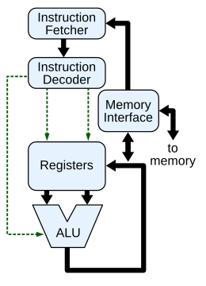

U01 · Sistemas Informáticos
Resumen visual de los bloques clave
Un sistema informático es un conjunto coordinado de componentes físicos y lógicos que transforman datos en información útil.
Este esquema resume el “camino” de la información: entrada de datos, procesamiento y salida.
La CPU coordina instrucciones, mueve datos entre registros y ejecuta operaciones en la ALU.
El hardware ejecuta, el software ordena y el firmware coordina el arranque.
Si falla uno de estos niveles, el sistema no puede iniciar o funcionar con normalidad.
El objetivo de la unidad es reconocerlos y entender su relación.

Repaso rápido: CPU, memoria, almacenamiento y E/S.